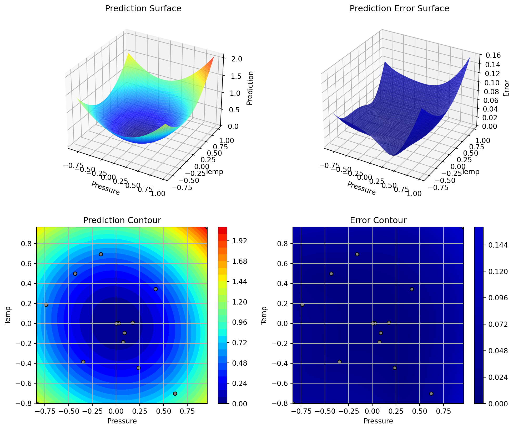
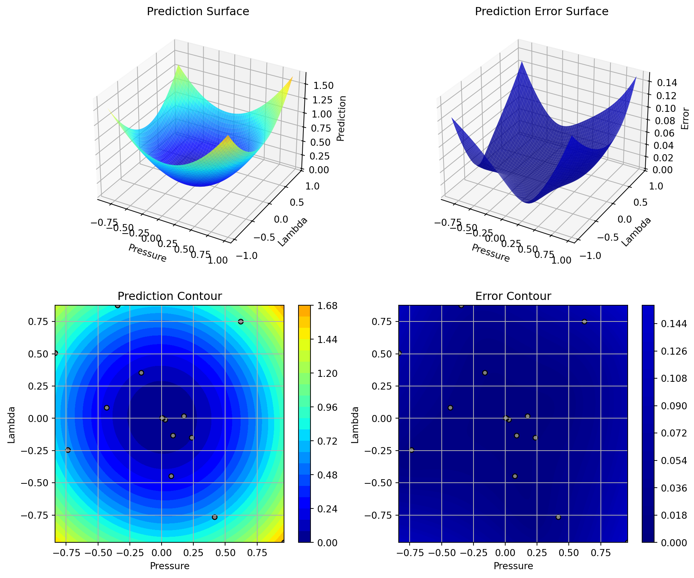
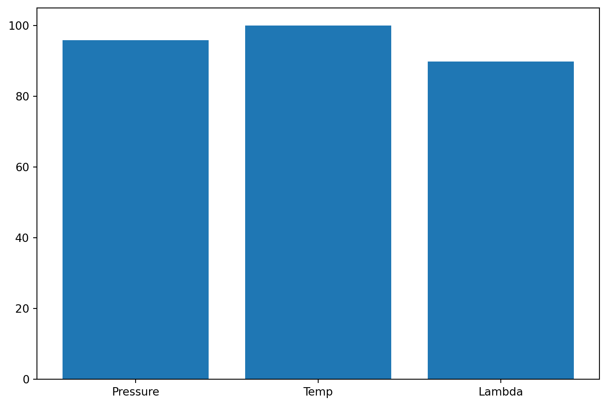
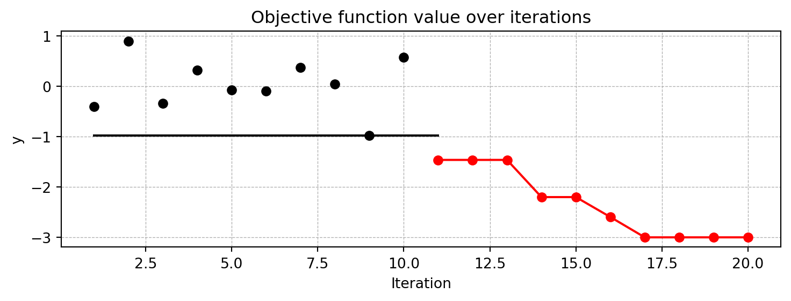
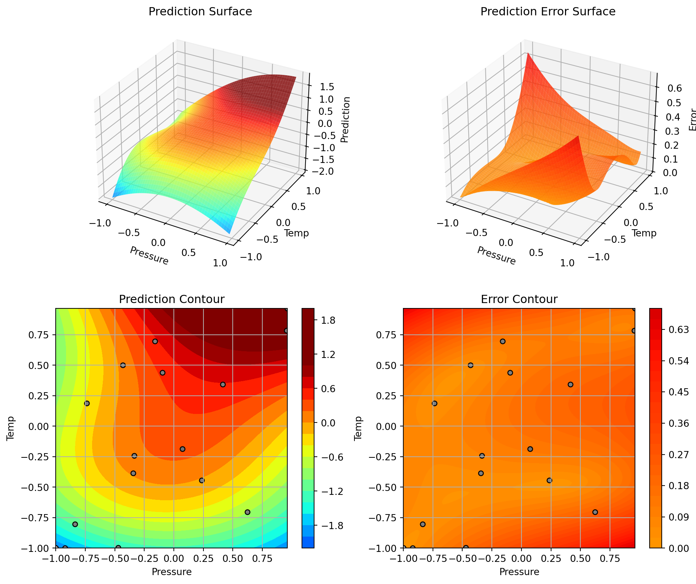
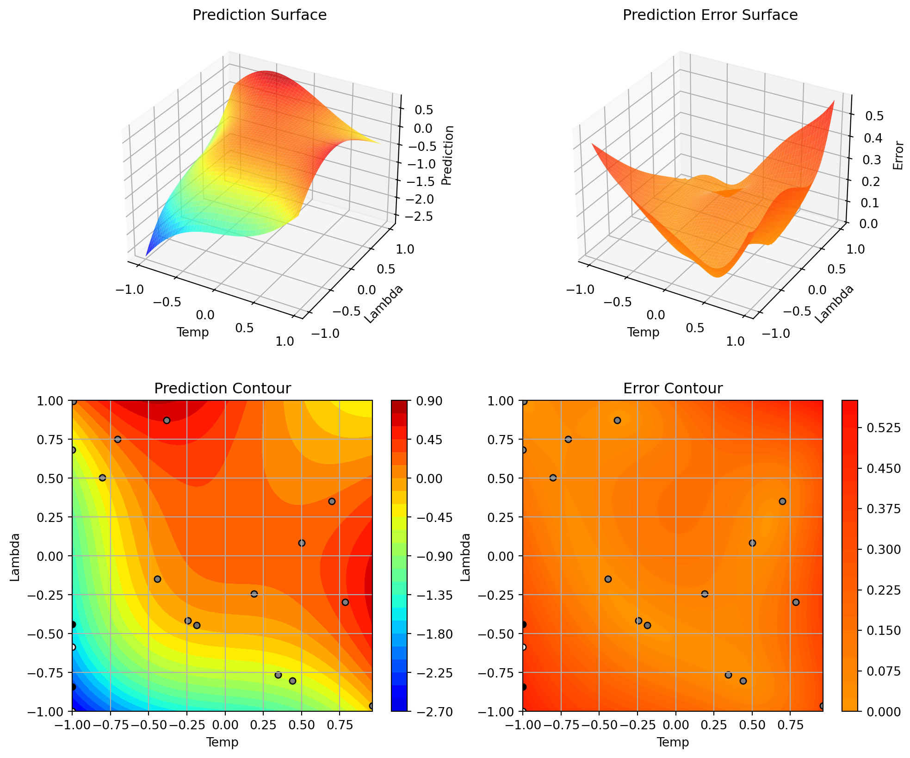

import numpy as np
from spotPython.fun.objectivefunctions import analytical
from spotPython.utils.init import fun_control_init, surrogate_control_init
from spotPython.spot import spot8 Multi-dimensional Functions
This chapter illustrates how high-dimensional functions can be optimized and analyzed.
8.1 Example: Spot and the 3-dim Sphere Function
8.1.1 The Objective Function: 3-dim Sphere
The spotPython package provides several classes of objective functions. We will use an analytical objective function, i.e., a function that can be described by a (closed) formula: \[
f(x) = \sum_i^k x_i^2.
\]
It is avaliable as fun_sphere in the analytical class [SOURCE].
fun = analytical().fun_sphereHere we will use problem dimension \(k=3\), which can be specified by the lower bound arrays. The size of the lower bound array determines the problem dimension. If we select -1.0 * np.ones(3), a three-dimensional function is created. In contrast to the one-dimensional case (Section 7.5), where only one theta value was used, we will use three different theta values (one for each dimension), i.e., we set n_theta=3 in the surrogate_control. The prefix is set to "03" to distinguish the results from the one-dimensional case. Again, TensorBoard can be used to monitor the progress of the optimization.
We can also add interpreable labels to the dimensions, which will be used in the plots. Therefore, we set var_name=["Pressure", "Temp", "Lambda"] instead of the default var_name=None, which would result in the labels x_0, x_1, and x_2.
fun_control = fun_control_init(
PREFIX="03",
lower = -1.0*np.ones(3),
upper = np.ones(3),
var_name=["Pressure", "Temp", "Lambda"],
show_progress=True)
surrogate_control = surrogate_control_init(n_theta=3)
spot_3 = spot.Spot(fun=fun,
fun_control=fun_control,
surrogate_control=surrogate_control)
spot_3.run()Created spot_tensorboard_path: runs/spot_logs/03_s7-Precision-Tower-7910_2024-01-22_13-01-39 for SummaryWriter()
spotPython tuning: 0.03443385333534457 [#######---] 73.33%
spotPython tuning: 0.03134644087259015 [########--] 80.00%
spotPython tuning: 0.0009629113092630495 [#########-] 86.67%
spotPython tuning: 8.523596553871695e-05 [#########-] 93.33%
spotPython tuning: 6.390084033622584e-05 [##########] 100.00% Done...
<spotPython.spot.spot.Spot at 0x7efc93ba3d90>
Note
Now we can start TensorBoard in the background with the following command:
tensorboard --logdir="./runs"and can access the TensorBoard web server with the following URL:
http://localhost:6006/8.1.2 Results
_ = spot_3.print_results()min y: 6.390084033622584e-05
Pressure: 0.005295727868736852
Temp: 0.0019486919744605867
Lambda: 0.005662040821575077spot_3.plot_progress()
8.1.3 A Contour Plot
We can select two dimensions, say \(i=0\) and \(j=1\), and generate a contour plot as follows.
Note:
We have specified identical min_z and max_z values to generate comparable plots.
spot_3.plot_contour(i=0, j=1, min_z=0, max_z=2.25)
- In a similar manner, we can plot dimension \(i=0\) and \(j=2\):
spot_3.plot_contour(i=0, j=2, min_z=0, max_z=2.25)
- The final combination is \(i=1\) and \(j=2\):
spot_3.plot_contour(i=1, j=2, min_z=0, max_z=2.25)
- The three plots look very similar, because the
fun_sphereis symmetric. - This can also be seen from the variable importance:
_ = spot_3.print_importance()Pressure: 95.6440444090568
Temp: 100.0
Lambda: 87.40111849476413spot_3.plot_importance()
8.1.4 TensorBoard
The second TensorBoard visualization shows the input values, i.e., \(x_0, \ldots, x_2\), plotted against the wall time.
The third TensorBoard plot illustrates how spotPython can be used as a microscope for the internal mechanisms of the surrogate-based optimization process. Here, one important parameter, the learning rate \(\theta\) of the Kriging surrogate is plotted against the number of optimization steps.
8.2 Conclusion
Based on this quick analysis, we can conclude that all three dimensions are equally important (as expected, because the analytical function is known).
8.3 Exercises
8.3.1 1. The Three Dimensional fun_cubed
- The input dimension is
3. The search range is \(-1 \leq x \leq 1\) for all dimensions. - Generate contour plots
- Calculate the variable importance.
- Discuss the variable importance:
- Are all variables equally important?
- If not:
- Which is the most important variable?
- Which is the least important variable?
8.3.2 2. The Ten Dimensional fun_wing_wt
- The input dimension is
10. The search range is \(0 \leq x \leq 1\) for all dimensions. - Calculate the variable importance.
- Discuss the variable importance:
- Are all variables equally important?
- If not:
- Which is the most important variable?
- Which is the least important variable?
- Generate contour plots for the three most important variables. Do they confirm your selection?
8.3.3 3. The Three Dimensional fun_runge
- The input dimension is
3. The search range is \(-5 \leq x \leq 5\) for all dimensions. - Generate contour plots
- Calculate the variable importance.
- Discuss the variable importance:
- Are all variables equally important?
- If not:
- Which is the most important variable?
- Which is the least important variable?
8.3.4 4. The Three Dimensional fun_linear
- The input dimension is
3. The search range is \(-5 \leq x \leq 5\) for all dimensions. - Generate contour plots
- Calculate the variable importance.
- Discuss the variable importance:
- Are all variables equally important?
- If not:
- Which is the most important variable?
- Which is the least important variable?
8.3.5 5. The Two Dimensional Rosenbrock Function fun_rosen
- The input dimension is
2. The search range is \(-5 \leq x \leq 10\) for all dimensions. - See Rosenbrock function and Rosenbrock Function for details.
- Generate contour plots
- Calculate the variable importance.
- Discuss the variable importance:
- Are all variables equally important?
- If not:
- Which is the most important variable?
- Which is the least important variable?
8.4 Selected Solutions
8.4.1 Solution to Exercise Section 8.3.5: The Two-dimensional Rosenbrock Function fun_rosen
import numpy as np
from spotPython.fun.objectivefunctions import analytical
from spotPython.utils.init import fun_control_init, surrogate_control_init
from spotPython.spot import spot8.4.1.1 The Objective Function: 2-dim fun_rosen
The spotPython package provides several classes of objective functions. We will use the fun_rosen in the analytical class [SOURCE].
fun_rosen = analytical().fun_rosenHere we will use problem dimension \(k=2\), which can be specified by the lower bound arrays. The size of the lower bound array determines the problem dimension. If we select -5.0 * np.ones(2), a two-dimensional function is created. In contrast to the one-dimensional case, where only one theta value is used, we will use \(k\) different theta values (one for each dimension), i.e., we set n_theta=3 in the surrogate_control. The prefix is set to "ROSEN". Again, TensorBoard can be used to monitor the progress of the optimization.
fun_control = fun_control_init(
PREFIX="ROSEN",
lower = -5.0*np.ones(2),
upper = 10*np.ones(2),
show_progress=True,
fun_evals=25)
surrogate_control = surrogate_control_init(n_theta=2)
spot_rosen = spot.Spot(fun=fun_rosen,
fun_control=fun_control,
surrogate_control=surrogate_control)
spot_rosen.run()Created spot_tensorboard_path: runs/spot_logs/ROSEN_s7-Precision-Tower-7910_2024-01-22_13-01-44 for SummaryWriter()
spotPython tuning: 90.78161224999724 [####------] 44.00%
spotPython tuning: 1.0174042912210557 [#####-----] 48.00%
spotPython tuning: 1.0174042912210557 [#####-----] 52.00%
spotPython tuning: 1.0174042912210557 [######----] 56.00%
spotPython tuning: 1.0174042912210557 [######----] 60.00%
spotPython tuning: 1.0174042912210557 [######----] 64.00%
spotPython tuning: 1.0174042912210557 [#######---] 68.00%
spotPython tuning: 1.0174042912210557 [#######---] 72.00%
spotPython tuning: 1.0174042912210557 [########--] 76.00%
spotPython tuning: 1.0174042912210557 [########--] 80.00%
spotPython tuning: 1.009276553359657 [########--] 84.00%
spotPython tuning: 0.7635573050356118 [#########-] 88.00%
spotPython tuning: 0.7635573050356118 [#########-] 92.00%
spotPython tuning: 0.7635573050356118 [##########] 96.00%
spotPython tuning: 0.7247971856355546 [##########] 100.00% Done...
<spotPython.spot.spot.Spot at 0x7efc93627910>
Note
Now we can start TensorBoard in the background with the following command:
tensorboard --logdir="./runs"and can access the TensorBoard web server with the following URL:
http://localhost:6006/8.4.1.2 Results
_ = spot_rosen.print_results()min y: 0.7247971856355546
x0: 0.169576487496273
x1: 0.08808069565867117spot_rosen.plot_progress(log_y=True)
8.4.1.3 A Contour Plot
We can select two dimensions, say \(i=0\) and \(j=1\), and generate a contour plot as follows.
Note:
For higher dimensions, it might be useful to have identical min_z and max_z values to generate comparable plots. The default values are min_z=None and max_z=None, which will be replaced by the minimum and maximum values of the objective function.
min_z = None
max_z = None
spot_rosen.plot_contour(i=0, j=1, min_z=min_z, max_z=max_z)
- The variable importance can be calculated as follows:
_ = spot_rosen.print_importance()x0: 100.0
x1: 1.3136488524690488spot_rosen.plot_importance()
8.4.1.4 TensorBoard
TBD
8.5 Jupyter Notebook
Note
- The Jupyter-Notebook of this lecture is available on GitHub in the Hyperparameter-Tuning-Cookbook Repository